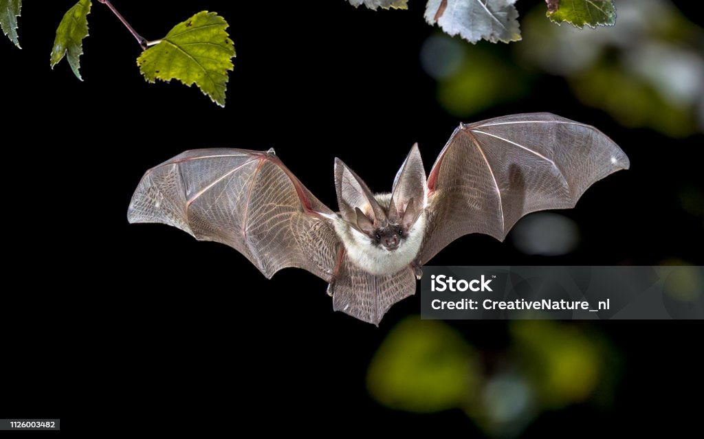

Once upon a haunted night...
Dark clouds covered the sky and whispers echoed in the graveyard. The town lay silent, as if holding its breath, waiting for the night’s secrets to awaken. A wolf howled, and the pumpkins glowed brighter…
 Turn the Page ➡
Turn the Page ➡
The Haunted Forest 🌲👻
As you step deeper into the forest, the air grows colder. Bats dart across the moon, and the trees whisper secrets older than time. A pale ghost drifts between branches, watching silently. Fog coils around your feet, urging you forward…
 Turn the Page ➡The Pumpkin Patch 🎃
Glowing pumpkins lined the path, each carved with faces—some smiling, others twisted into grimaces. Legend said that if you listened closely, the pumpkins whispered their stories.
Turn the Page ➡The Creepy Mansion 🏚️
At the edge of the forest, a towering mansion loomed. Its windows glowed faintly, though no one had lived there for centuries. The gates creaked open as if expecting you. Inside, cobwebs covered the halls and portraits watched silently…
Turn the Page ➡The Witches’ Coven 🔮
In the mansion’s cellar, a circle of witches chanted around a bubbling cauldron. Sparks of green light rose, filling the room with the scent of herbs and smoke. “The night is ours,” they whispered. The flames danced higher…
Turn the Page ➡The Skeleton Ball 💀🎶
From the attic, music echoed. Skeletons waltzed across the dusty ballroom floor, bones clicking in rhythm to a haunting violin. One skeleton bowed, inviting you to dance…
Turn the Page ➡The Vampire’s Castle 🦇🩸
Beyond the hills stood a castle, towers piercing the clouds. Bats swarmed the turrets. Inside, a vampire lord waited, his cloak flowing like blood. “Welcome,” he said, with a smile sharp as knives…
Turn the Page ➡The Grand Finale 🌌
As midnight struck, the forest, mansion, witches, skeletons, and vampire gathered under the glowing moon. A swirl of light bound them together, and in a flash—everything vanished. Only the pumpkins remained, whispering: “Come back next Halloween…”
🔄 Back to Start